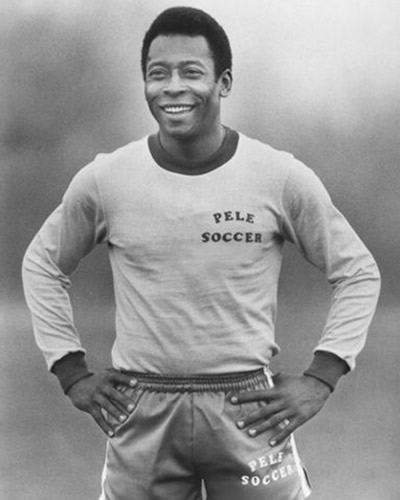

Copas do Mundo de Futebol
Ganhadores :

Ano : |
Ganhador : |
Vice : |
|---|---|---|
| 2018 | França | Croácia |
| 2014 | Alemanha | Argentina |
| 2010 | Espanha | Holanda |
| 2006 | Itália | França |
| 2002 | Brasil | Alemanha |
| 1998 | França | Brasil |
| 1994 | Brasil | Itália |
| 1990 | Alemanha-Ocidental | Argentina |
| 1970 | Brasil | Itália |
| 1966 | Inglaterra | Alemanha-Ocidental |
| 1962 | Brasil | Checoslováquia |
| 1958 | Brasil | Suécia |
Sobre a copa do mundo :
A Copa do Mundo é uma competição internacional organizada pela Federação Internacional de Futebol a cada quatro anos. A Copa passou a ser realizada em 1930, com a primeira competição sediada pelo Uruguai. A escolha da nação-sede é determinada em eleições feitas pela própria Fifa. A Copa do Mundo é um dos maiores eventos esportivos do planeta e, a cada quadriênio, bilhões de pessoas assistem aos jogos realizados. As edições de 2010 (que ocorreu na África do Sul) e 2014 (no Brasil) contaram com cerca de 3,2 bilhões de espectadores, segundo dados compartilhados pela Fifa. A final da Copa do Mundo de 2014 registrou, sozinha, aproximadamente 1 bilhão de espectadores. A organização de uma Copa do Mundo também gera gastos consideráveis – muito em parte por conta das altas exigências da Fifa. A Copa de 2014 teve gastos de aproximadamente R$ 8 bilhões somente com estádios, ao passo que a edição de 2010 registrou aproximados R$ 4 bilhões.
O Brasil é o único penta campeão até o momento.
O maior jogador do século XX :
Edson Arantes do Nascimento, mais conhecido como Pelé, foi o maior futebolista de todos os tempos na história do futebol mundial. Recebeu o título de melhor jogador do século XX pela FIFA (Federação Internacional de Futebol Associado) e uma série de prémios e distinções mundiais. Nascido na cidade de três corações, no estado de Minas Gerais, no Brasil, desde muito novo que desejava ser futebolista como o seu pai, João Ramos do Nascimento, conhecido como Dondinho. A “pérola negra”, alcunha pela qual era conhecido Pelé, saltou para a ribalta em 1956, com apenas 16 anos, ao serviço do Santos Futebol Clube. Destacou-se por ser um avançado fora de série, com uma técnica fantástica e com uma enorme apetência para os golos. A sua consagração aconteceu no Campeonato do Mundo da Suécia, em 1958, quando o Brasil foi, pela primeira vez na sua história, campeão mundial. Pelé marcou 6 gols e foi determinante para essa conquista. O atacante participou ainda na conquista do Campeonato do Mundo de 1966 em Inglaterra e no Campeonato do Mundo do México, em 1970, onde foi apelidado de rei. Pelé fez mais de mil golos (1284) em todas as competições e ganhou os mais variados títulos pelos clubes por onde passou e pela seleção brasileira.